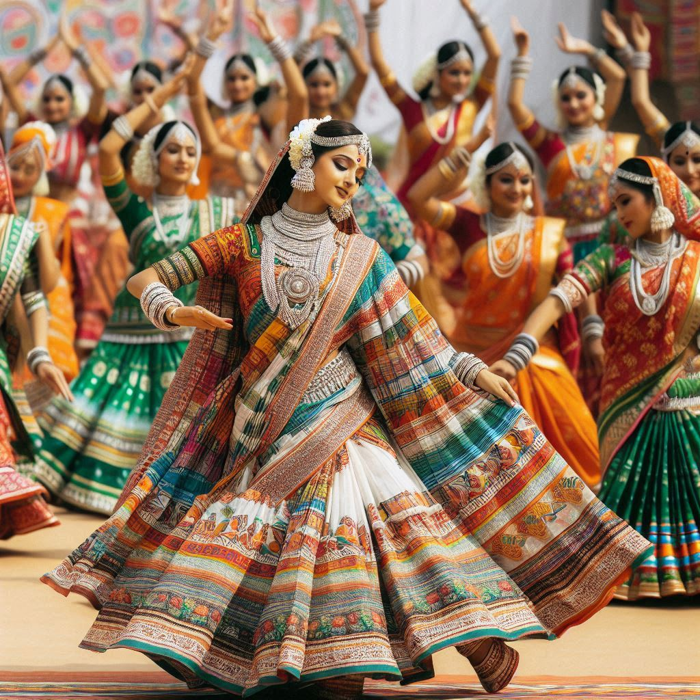
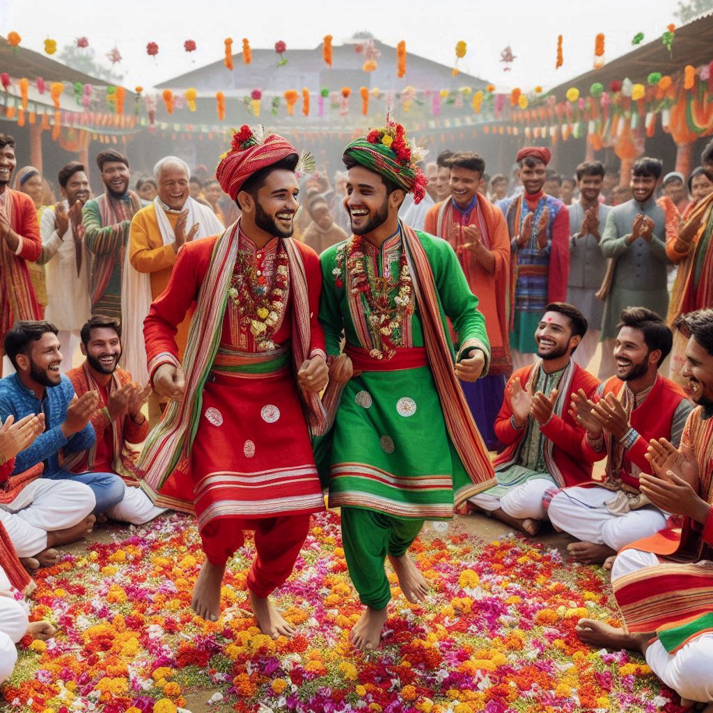

The traditional dress of Jharkhand reflects the state's cultural diversity and tribal heritage, with each
community adding its distinct style. The attire is simple, yet colorful, combining practicality with cultural
significance. Below is a detailed look at the traditional clothing styles in Jharkhand:
1. Men’s Traditional Attire
- Dhoti: The traditional dress for men is the dhoti, a long piece of
cloth wrapped around the waist and legs, usually made of white or off-white fabric.
- Kurta and Shirt: The dhoti is paired with a kurta (a long shirt)
or a simple shirt. On special occasions, an angrakha or embroidered jacket may be
worn.
- Headgear: In some tribal communities, men wear pagris (turbans) or
cloth wraps, especially during rituals and festivals.
2. Women’s Traditional Attire
- Saree: The traditional dress for women is the saree, worn in a
unique tribal style, often with red-bordered or vibrant patterned fabrics.
- Parthan and Panchi: Tribal women, particularly from the Santhal
community, wear parthan (lower garment) and panchi (upper
garment), with different draping styles across tribes.
- Blouses and Tops: Women pair their sarees with blouses or simple tops adorned with
embroidery, beads, or shells.
3. Ornaments and Accessories
- Silver Jewelry: Both men and women wear silver jewelry such as earrings, necklaces,
anklets, bangles, and rings, often featuring natural motifs.
- Beadwork: Bead necklaces and other colorful beadwork are popular among tribal
women, handcrafted with cultural significance.
- Bichua and Paijan: Women wear toe rings (bichua) and
anklets (paijan) as part of their traditional jewelry.
- Tattoos and Body Painting: Some tribes adorn themselves with tattoos or body
paintings that represent their community’s history and spirituality.


4. Fabrics and Patterns
- Natural Fibers: Traditional clothing is often made from locally sourced fibers like
cotton and tussar silk, typically handwoven.
- Embroidery and Weaving: Clothes feature embroidery, mirror work, and geometric
patterns, reflecting tribal motifs and cultural symbols.
5. Modern Influence and Adaptations
- Modern and Western clothing is common in urban areas of Jharkhand, but traditional dress still holds
cultural significance, especially during festivals and rituals.
- Many people blend traditional elements with contemporary styles, creating a unique fusion of old and
new.
6. Tribal Variations in Clothing
- Santhal Women: Typically wear a short saree draped in a distinctive style, paired
with traditional jewelry.
- Oraon Tribe: Women wear sarees with unique draping styles, often adorned with
floral patterns.
- Munda Tribe: Both men and women wear simple, colorful garments that represent their
tribal identity.
Jharkhand's traditional dress highlights its rich cultural diversity, showcasing vibrant colors, intricate
jewelry, and unique draping styles. The clothing serves as a symbol of the state's heritage, blending
ancient customs with the demands of modern society.